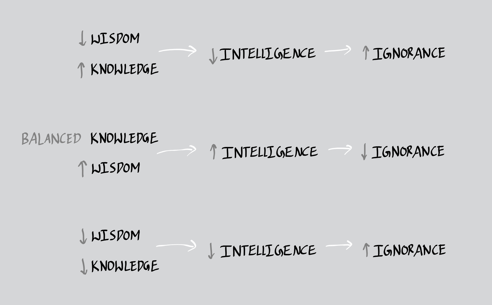
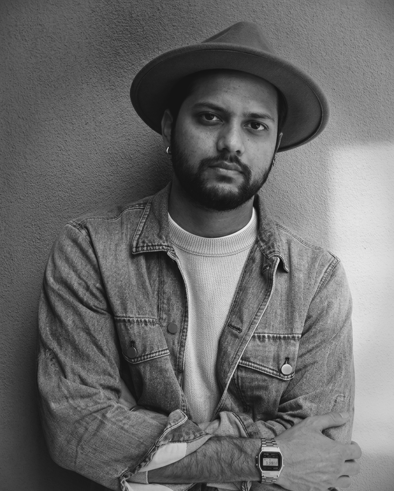

An equation has no meaning for me unless it expresses a thought of god.
- Srinivasa Ramanujan
11:12 | April 13, 2026

The desire to know more is almost inseparable from being human. From the earliest stage of awareness, when a child first begins to observe the world, there is a natural pull toward understanding everything around them. This curiosity does not need to be taught, it simply exists as part of being alive. As we grow, society strengthens this tendency even more by encouraging learning, questioning, and constant expansion of knowledge. Most people strongly believe that the more we know about anything or everything, the better we become, not only for ourselves but also for the people around us. At first glance, this belief feels completely correct and even comforting. Knowledge clearly helps us improve decision making, it helps us adapt to situations, and it allows us to function more effectively in the world. It gives structure to our thoughts and direction to our actions. In many ways, it becomes the foundation of what we call personal and societal progress. However, when we slowly begin to widen our perspective beyond the boundaries of daily life, something deeper begins to emerge. If we are not limited only to this short span of life but start thinking in a much larger sense, even beyond life itself, then new questions naturally arise. What happens to all the knowledge we collect when life ends? Where do all our thoughts go when the body can no longer function? Do they simply vanish without meaning or continuation? And even before birth, when none of this knowledge existed for us, what exactly was that state? These questions are not meant to...
Read more...
Pramod Koushik is a coder who uncodes mathematics from philosophy and debugs the miscalculations of thoughts or idealogies...
Read more..
This boring blog brings together a range of personal thoughts and reflections that may not seem important at first, but come from a genuine place of curiosity. It explores ideas that often go unnoticed, along with questions that people rarely stop to think about. Some of these thoughts try to find meaning where there may not be clear answers, while others simply exist as open reflections without any conclusion. The writing moves between philosophy, everyday life, and perspectives on whatever nonsense that pops in my brain, creating a space where simple, random, and sometimes uncertain ideas can be shared freely.